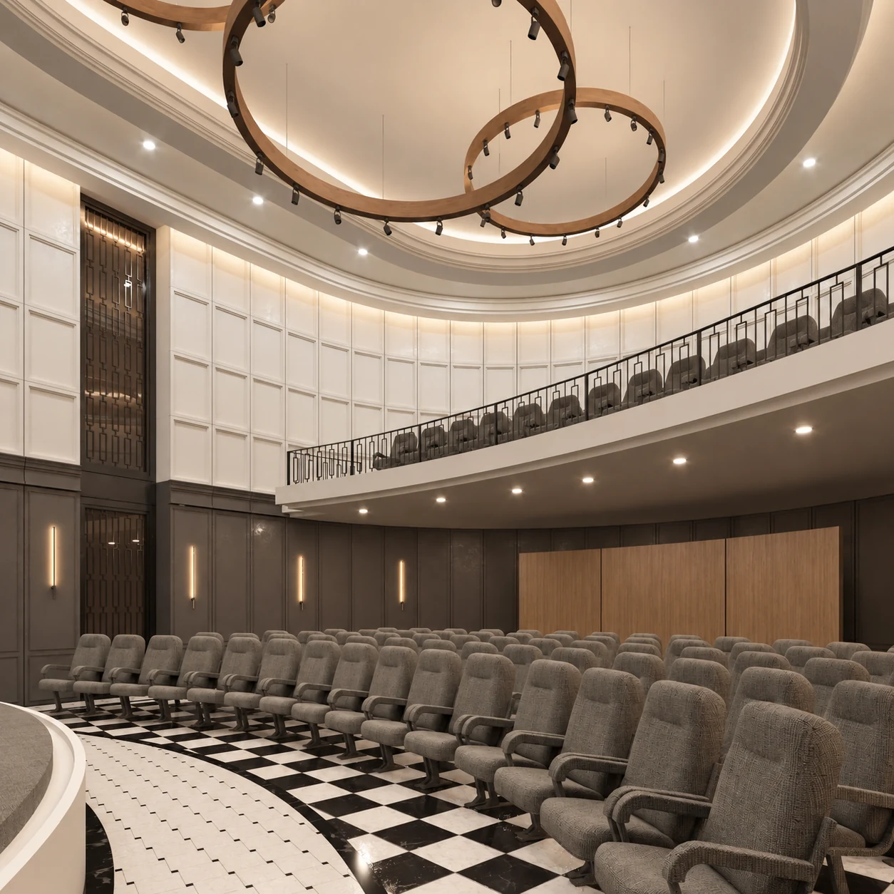
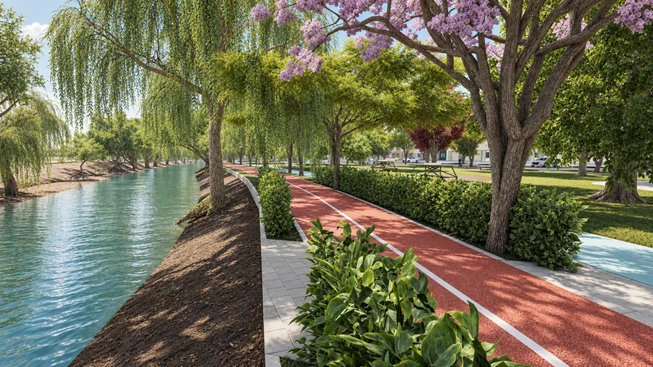
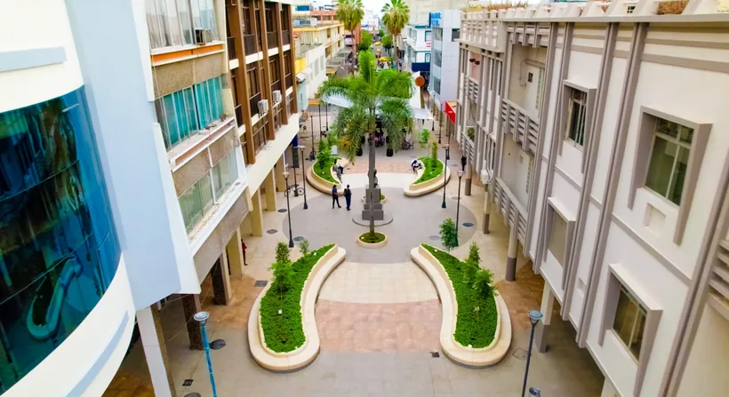
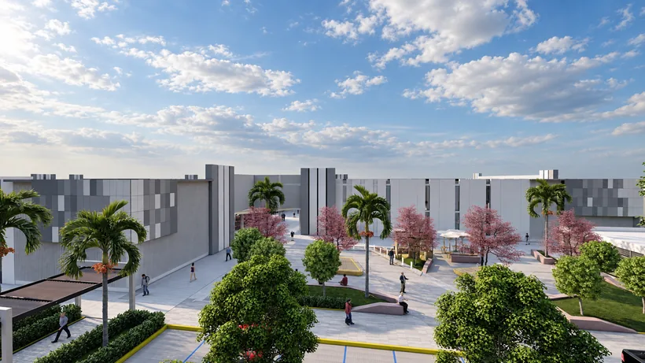
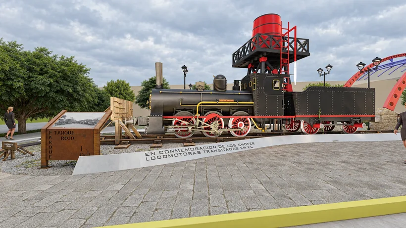
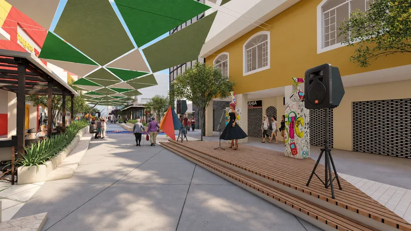
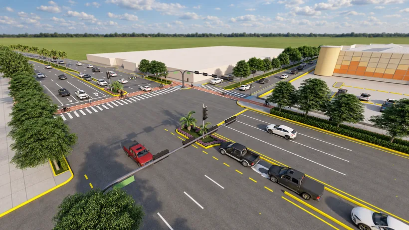
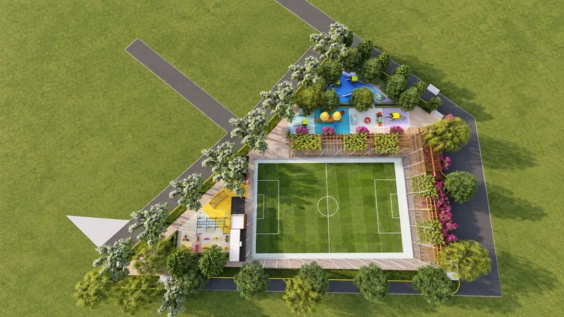
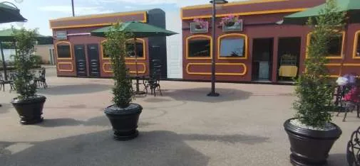

01
Interior institucional
Salón de la Ciudad
Materia, luz y carácter.
Propuesta arquitectónicaDarío Apolo Guachizaca · Machala, Ecuador
Arquitectura, ciudad y paisaje.
Diseño que conecta los lugares con la vida cotidiana.

Una práctica entre escalas
Trabajo en la relación entre arquitectura, espacio público e identidad local. Este portafolio reúne propuestas, documentación y experiencia en intervenciones ejecutadas.
Portafolio / Selección 2026
Una mirada al espacio, al proceso
y a mi aporte en cada proyecto.
9 proyectos
Materia, luz y carácter.
Propuesta arquitectónica
02La ciudad encuentra su paisaje.
Propuesta de parque
03Un lugar para la memoria.
Obra terminada · 2025
04Del edificio a la plaza.
Propuesta arquitectónica
05El patrimonio forma parte del recorrido.
Propuesta de adecuación
06Sombra, paisaje y vida cotidiana.
Propuesta urbana
07Diseñar también el borde de la vía.
Propuesta de intersección
08Jugar. Encontrarse. Permanecer.
Propuesta y referencia BIM
09Cuidar el espacio que ya existe.
Obra ejecutadaNo hay proyectos con esa búsqueda.
Una selección para llevar contigo.28 páginas · Perfil, proyectos y fuentes · PDF de 10,6 MB
Descargar portafolioExperiencia en Machala
Participación en parques, plazas, espacios culturales y regeneraciones urbanas.
Esta relación reúne 25 lugares y actuaciones. La función y la etapa varían según el proyecto; las fichas detallan el aporte de los casos seleccionados.
Sobre mi práctica
Arquitecto urbanista y Magíster en Planificación del Territorio. Mi experiencia combina diseño de espacios públicos, documentación arquitectónica, representación 3D y seguimiento de proyectos de inversión.
Cómo trabajo
Contexto, necesidades de uso y relaciones con el entorno como punto de partida.
Diseño arquitectónico y urbano, documentación y desarrollo de la propuesta.
Modelado, renders y presentaciones que explican el espacio y sus decisiones.